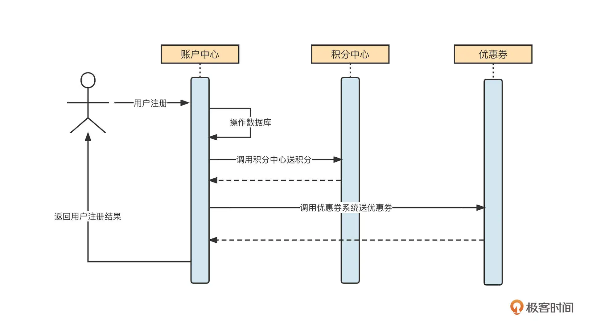
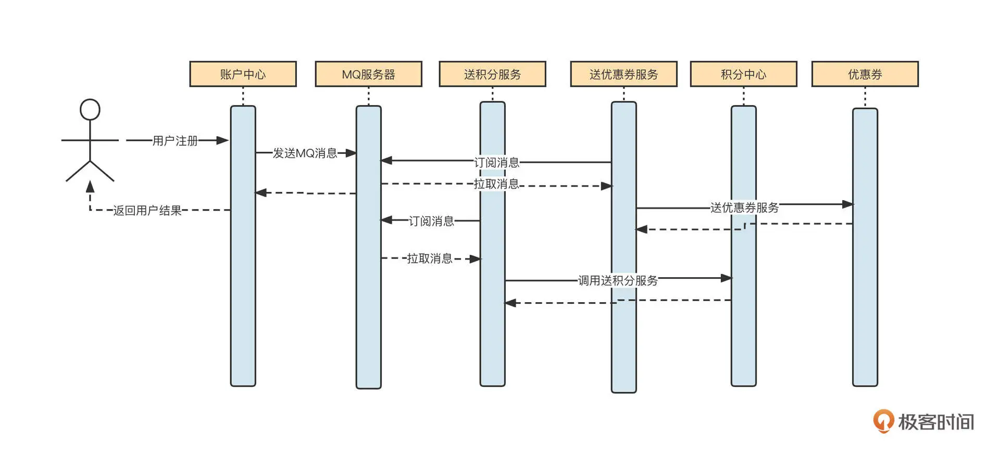
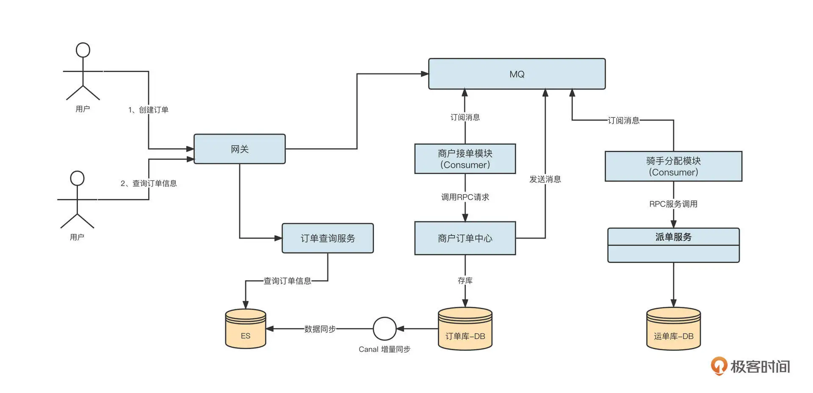
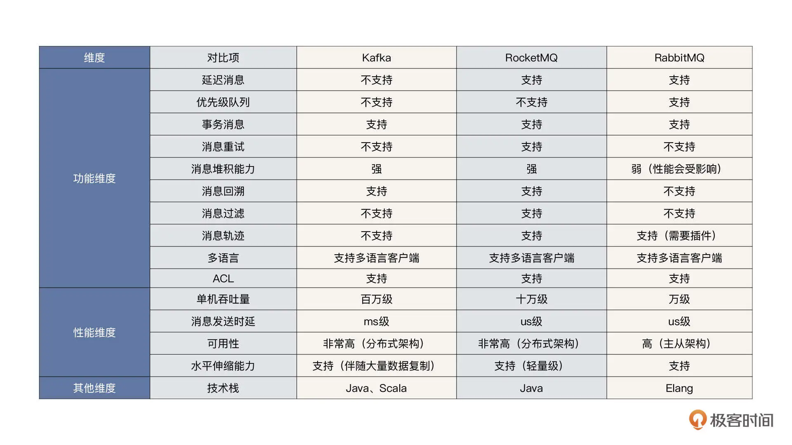

- 00 开篇词 为什么中间件对分布式架构体系来说这么重要？.md
- 01 中间件生态（上）：有哪些类型的中间件？.md
- 02 中间件生态（下）：同类型的中间件如何进行选型？.md
- 03 数组与链表：存储设计的基石有哪些？.md
- 04 红黑树：图解红黑树的构造过程与应用场景.md
- 05 多线程：多线程编程有哪些常见的设计模式？.md
- 06 锁：如何理解锁的同步阻塞队列与条件队列？.md
- 07 NIO：手撸一个简易的主从多Reactor线程模型.md
- 08 Netty：如何优雅地处理网络读写，制定网络通信协议？.md
- 08 加餐 中间件底层的通用设计理念.md
- 09 技术选型：如何选择微服务框架和注册中心？.md
- 10 设计原理：Dubbo核心设计原理剖析.md
- 11 案例：如何基于Dubbo进行网关设计？.md
- 12 案例：如何实现蓝绿发布？.md
- 13 技术选型：如何根据应用场景选择合适的消息中间件？.md
- 14 性能之道：RocketMQ与Kafka高性能设计对比.md
- 15 案例：消息中间件如何实现蓝绿？.md
- 16 案例：如何提升RocketMQ顺序消费性能？.md
- 17 运维：如何运维日均亿级的消息集群？.md
- 18 案例：如何排查RocketMQ消息发送超时故障？.md
- 19 案例：如何排查RocketMQ消息消费积压问题？.md
- 20 技术选型：分布式定时调度框架的功能和未来.md
- 21 设计理念：如何基于ZooKeeper设计准实时架构？.md
- 22 案例：使用分布式调度框架该考虑哪些问题？.md
- 23 案例：如何在生产环境进行全链路压测？.md
- 大咖助阵 高楼：我们应该如何学习中间件？.md
- 用户故事 学而时习之，不亦乐乎.md
- 用户故事 愿做技术的追梦人.md
- 用户故事 浪费时间也是为了珍惜时间.md
- 结束语 坚持不懈，越努力越幸运.md
13 技术选型：如何根据应用场景选择合适的消息中间件？
你好，我是丁威。
随着微服务技术的兴起，消息中间件也成为了分布式架构体系的必备组件，所以从这节课开始，我们一起来学习消息中间件。
我们的课程还是会将理论和实践相结合，将重点落在实战。
我会分别介绍消息中间件的应用场景与技术选型、两种消息中间件（Kafka 和 RocketMQ）分别是如何实现高性能的。紧接着，我会结合自己的工作经验，带你看看消息中间件如何实现蓝绿发布、如何提升 RocketMQ 顺序消费能力；最后，我们会一起认识消息中间件优雅的生产环境运维能力，搞清如何排查消息发送、消息消费相关的故障。
我们这节课主要来看消息中间件应用场景与技术选型。
消息中间件的应用场景
消息中间件的应用场景主要有两个：异步解耦与削峰填谷。
我们首先通过电商平台用户注册送积分、送优惠券这个场景来理解异步解耦合。如果不使用消息中间件，电商平台送积分的实现也许是下图这个样子：

我们简单看一下这个流程。
-
用户在网站前端注册页面填写相关信息，然后调用账号中心服务，注册账号。
-
账户中心首先执行用户注册逻辑处理（例如判断用户是否已注册、是否符合注册条件等），然后写入到数据库。
-
注册成功后，需要调用积分中心（赠送积分接口）给用户送积分。
-
送完积分后，再调用优惠券相关接口，为用户赠送优惠券。
-
成功送完积分、优惠券后，向用户返回“注册成功”
从架构角度看，上面这个实现方法有一个非常严重的问题，那就是可扩展性低。
例如，如果要在春节期间调整活动策略，在发送积分的同时，还需要额外发送新春大礼包，开发人员为了实现这一功能，就不得不修改用户注册流程，并重新部署用户注册模块。
从功能维度来看，这次需求的变更集中在活动相关的内容。用户注册本身的逻辑并未发生变化，但由于用户注册逻辑与活动模块存在耦合，两个模块必须一起调整和发布，这就对系统稳定性造成了影响。
另外，调用积分、优惠券两个远程 RPC 请求让用户注册主流程变长，在高并发场景下，用户注册这一环容易成为系统瓶颈。
要解决上面这两个明显的设计缺陷，常用的方案是引入消息中间件，让用户注册主流程和商家活动异步解耦合。改造后的时序图如下：

账户中心完成用户注册相关逻辑后，会向 MQ 发送一条消息到 MQ 服务器，然后就直接给用户返回“注册成功”。赠送优惠券、积分等与活动相关的需求我们可以异步执行，这样，无论后续互动逻辑发生什么变化，账户中心都不需要发布新版本。
引入送积分服务（MQ 消费者应用）和送优惠券服务（MQ 消费者应用）会订阅消息，并根据消息调用积分中心、优惠券中心的服务。如果后续活动发生变化，例如取消送积分活动但开始赠送新春大礼包，那我们只需停止送积分服务应用，增加送新春大礼包的消费者应用，就可以真正做到对新增开放，对修改关闭。
消息中间件的另外一个常用场景是削峰填谷。我们来看一个外卖骑手送餐的场景。它的设计架构图如下：

我们分别说明一下“创建订单流程”和“查询订单信息”两个流程，探究一下这个方案的精髓。
先来看创建订单流程。
-
用户在 App 中下单，App 会调用网关相关接口创建订单，网关接收到请求后，并不是直接调用内部商户订单中心来创建订单接口，而是先发送一条消息到 MQ。
-
商户接单模块（Consumer）订阅 MQ 中的消息，处理消息的时候调用内部商户订单中心创建订单接口，创建一条真正的订单数据到数据库。
-
创建订单后，商户订单中心将再发送一条消息到 MQ 服务器。然后骑手分配模块（Consumer）订阅消息，调用派单服务相关接口，引导骑手进行外卖配送。
-
同时，数据同步组件（Canal）将数据库中的数据准实时同步到 Es 服务器。
为什么网关不直接调用外部的创建订单接口，而是将数据先写入到 MQ 中呢？
我们不妨设想一下，商户订单中心支持的最大并发为 1w/tps。如果某一个业务高峰期，从网关进入的流量突然飙升到 1.5w/tps，而且持续了 10 分钟，商户订单系统会直接崩溃，造成服务不可用等严重故障！
那该如何解决呢？
有人可能会说，我们可以使用限流机制保护商户订单系统。例如，我们只允许 9000TPS 的流量从网关进入到商户订单中心，直接拒绝多余的流量，让客户端重试。这确实可以解决问题，但会带来经济损失和糟糕的用户体验。
这个时候我们有一个更加友好的解决方案：引入消息中间件。
**引入消息中间件的目的是让它来扛住海量流量，流量先进入到消息队列中，然后消费端下游系统可以慢慢消费消息中间件中的数据，这样能有效保护下游系统不被瞬时的流量击破。**这种方案可能带来的最坏结果就是，消费这些消息会存在延迟。但这些订单都可以成功创建，真正的交易行为已经产生了。接下来要做的就是根据实际情况扩容或者缩容，尽快将积压的数据处理掉。
不过我们这个时候引入消息中间件，其实潜台词是它们的性能必须满足下面几个基本要求：高吞吐量、低延迟，还要具体消息堆积能力。
我们再看一下订单查询流程：
-
用户在 App 端发起订单查询，App 会调用网关的订单查询接口，网关再将请求转发到内部的订单查询服务；
-
订单查询服务不是在 MySQL 数据库，而是直接查询 Es 中的数据。
这里一个设计的亮点是，引入了数据同步组件 Canal，将 MySQL 数据库中的数据实时同步到了 Es。这样查询订单时只查 Es 就可以了，实现了订单写入与订单查询在异构数据源的读写分离。
消息中间件的技术选型
在这节课的最后，我们来看看如何选择消息中间件。
目前消息中间件领域主要的中间件包括 RocketMQ、Kafka 和 RabbitMQ，我们先来看一下这张功能对比图：

结合上面这张图，我们再对比分析一下。
首先，我认为功能级别不具备一票否决权。
例如，RabbitMQ 支持优先级队列，而 RocketMQ、Kafka 不支持，那么如果我们的项目中有优先级队列的使用诉求，我们就必须将 Kafka、RocketMQ 排除掉，选择使用 RabbitMQ 吗？我是不建议这样做的，任何涉及到功能的短板，都可以通过其他方式实现。
但我也并不是说功能特性就一点都不重要。这一点我在后面讨论 RocketMQ 与 Kafka 的选型时会再次谈到。
其次，我认为在选型时要特别注意中间件的性能和扩展性。
因为随着业务不断地发展，性能问题会越来越突出，而且性能问题都具有隐蔽性，一旦发生，破坏性大，影响程度深，让人防不胜防。
例如，RabbitMQ 的消息堆积能力不强，一旦消费端无法及时将消息处理掉，会极大影响消息服务器发送消息的性能。这一点是非常致命的，因为引入消息中间件的目的就是抵挡住洪峰流量，如果消息中间件因为积压问题影响了消息的发送，那是万万不可取的。
因此，从性能的角度来看，RocketMQ 和 Kafka 比 RabbitMQ 的表现更好。
另外一个重要的因素也不得不加以考虑，那就是中间件使用的编程语言。
在使用中间件时一般都会遇到很多问题，一个非常行之有效的方法就是深入研究源码。这时候，如果中间件的编写语言和团队技术栈不匹配，将会极大地增加深入研究这款中间件的难度。如果团队对中间件的掌控能力很弱，自然很难保持中间件的稳定运行。
在进行具体的选型时，我们可以结合自己团队的实际情况。
-
如果公司或团队的技术栈以 Golang 为主，建议选择 RabbitMQ，RabbitMQ 在性能上的缺陷可以通过搭建多套集群加以规避。
-
如果公司或团队的技术栈以 Java 为主，我建议使用 Kafka 或 RocketMQ。RocketMQ 和 Kafka 都是性能优秀的中间件，在这两者之间进行选择时可以更多地关注功能特性。RocketMQ 提供了消息重试、消息过滤、消息轨迹、消息检索等功能特性，特别是 RocketMQ 的消息检索功能，因此 RocketMQ 很适合核心业务场景。而 kafka 更加擅长于日志、大数据计算、流式计算等场景。
总结
好了，这节课就讲到这里。
刚才，我们结合案例学习了消息中间件的两大经典使用场景：异步解耦与削峰填谷。最后重点阐述了消息中间件的选型问题。
在选择消息中间件时，需要格外注意以下三点：
-
功能级别不具备一票否决权；
-
选型时要特别注意中间件的性能与扩展性；
-
需要注重团队技术栈与中间件编程语言的匹配度。
在这三点之上，我们就可以根据实际情况选择一款适合自己团队的消息中间件了。
课后题
最后，我还是照例给你留一道思考题。
刚才我们说异步解耦是消息中间件的常见使用场景。在电商注册送积分这个场景中，引入消息中间件能在活动需求不断变化的同时，保证用户注册主流程的稳定性。但你知道这会带来哪些问题吗？我们又该如何解决它们呢？
欢迎你在留言区与我交流讨论，我们下节课见！
© 2019 - 2023 Liangliang Lee. Powered by Vert.x and hexo-theme-book.